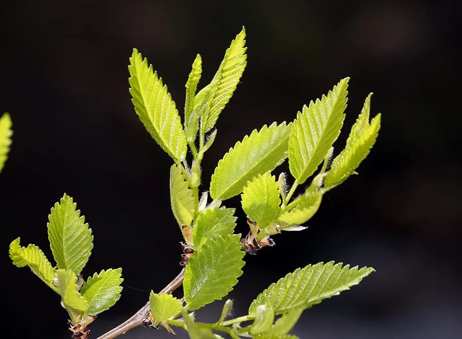

乔木 · 植物界
榆树 Ulmus pumila

中国北方常见的落叶乔木，耐寒耐旱耐瘠薄，早春结出的“榆钱”可食，是北方平原与村落的乡土树种。
- 分类
- 门被子植物门纲木兰纲目蔷薇目科榆科属榆属
- 栖息环境
- 海拔 2000 米以下的平原、河岸与村庄旁，耐寒耐旱耐瘠薄
- 地理分布
- 中国东北、华北、西北及西南各地，朝鲜半岛、俄罗斯、蒙古也有分布
- 保护级别
- 暂无评估；中国未列入国家重点保护野生植物名录
物种志
榆树为落叶乔木，高可达 25 m，树皮灰褐色、纵裂；叶片卵形至椭圆状卵形，边缘具单锯齿，先端渐尖，叶基偏斜，是榆科叶片的典型特征。花期 3–4 月，先花后叶，花小、簇生于去年生枝的叶腋；果实为翅果，近圆形，直径 1–2 cm，成熟时黄白色，形似小铜钱，俗称“榆钱”，可随风飘散。
榆树分布于中国东北、华北、西北及西南各地，也见于朝鲜半岛、俄罗斯与蒙古，是北方平原、村庄与河岸常见的乡土树种。它喜光、耐寒、耐旱、耐瘠薄，能适应多种土壤，是“四旁”绿化和防护林的重要树种。木材纹理直、耐腐，可供建筑、家具与农具用；树皮纤维可制绳、造纸；嫩果“榆钱”可食，过去是春季常见的野菜；树皮与叶可入药。榆树也是中国北方农村最具生活记忆的树种之一。
形态与习性
- 株高可达 25 m，树皮灰褐色纵裂
- 花期3–4 月，先花后叶
- 果期4–5 月，翅果俗称“榆钱”
- 光照喜光，不耐长期荫蔽
- 水分耐旱，怕长期积水
- 土壤适应性强，耐瘠薄与轻度盐碱
- 主要用途建筑与家具用材、防护林、树皮纤维制绳、榆钱食用
趣味知识
- 榆树的果实是圆形翅果，成熟时黄白色，形似小铜钱，因此俗称“榆钱”。
- 榆树先花后叶，榆钱可拌面蒸食，是北方春季常见的时令野菜。
- 榆树叶基部偏斜，枝条上的叶片常常左右不对称，是榆属的识别特征。
- 榆树耐旱耐瘠薄，是北方“四旁”绿化与农田防护林的重要乡土树种。